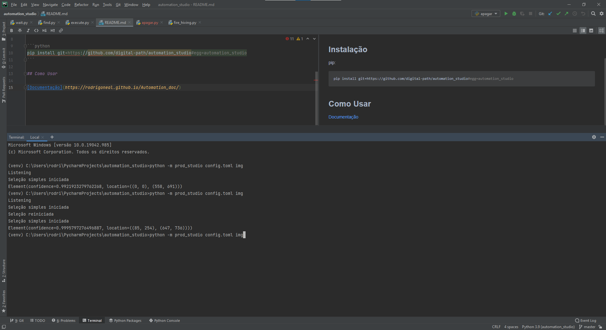
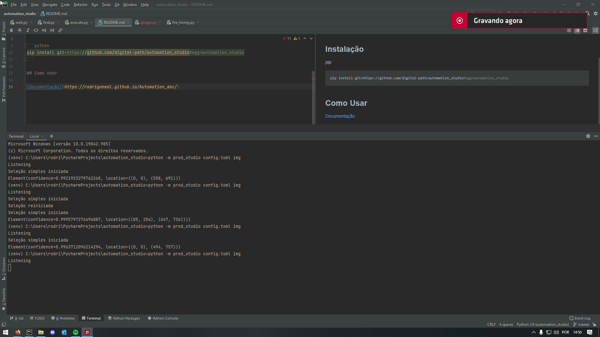
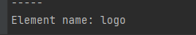
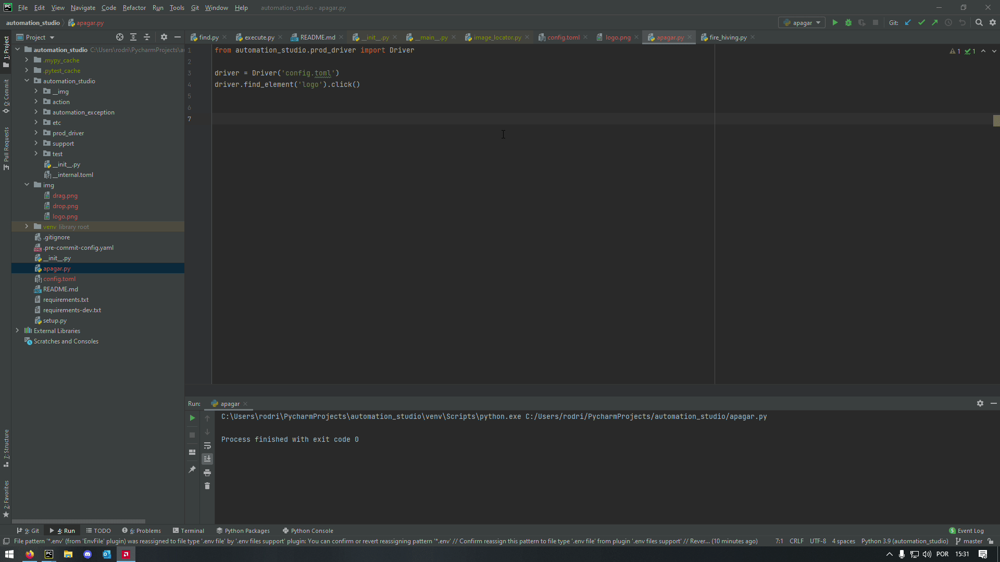

Quickstart
Vamos fazer o Automation Studio encontrar e clicar no logo do pycharm.
- Mapear o elemento com o prod studio.
python -m prod_studio config.toml img
O prod studio vai criar o arquivo "config.toml" para escrever o caminho das imagens e a pasta "img" onde vão ficar as imagens.
Essa é a tela que vamos mapear. 
Vamos pegar só o logo do pycharm que fica na parte superior esquerda.
Vamos fazer um mapeamento simples. Apertando F1.
Coloque o mouse na parte superior do elemento que deseja mapear e preste atenção na precisão de encontrar o elemento mostrado no terminal. 
Quando atingir uma boa precisão basta apertar F1 para finalizar o mapeamento.
Dê nome ao elemento.
 Não precisa colocar a extensão da imagem, só o nome que será a chave dentro do toml.
- Usando o Driver do Automation Studio.
Importe o Driver do automation studio.
from automation_studio.prod_driver import Driver
Passe o caminho do toml para dentro do Driver.
driver = Driver('config.toml')
- Localizando o elemento.
driver.find_element('logo')
O find_element vai procurar o elemento "logo" que demos o nome quando mapeamos.
Você pode salvar em uma varialvel ou pode interagir com elemento.
- Interagindo com o elemento.
Vamos clicar no elemento.
driver.find_element('logo').click()
- A magia acontece
